ELOISE LIKES DRAWING
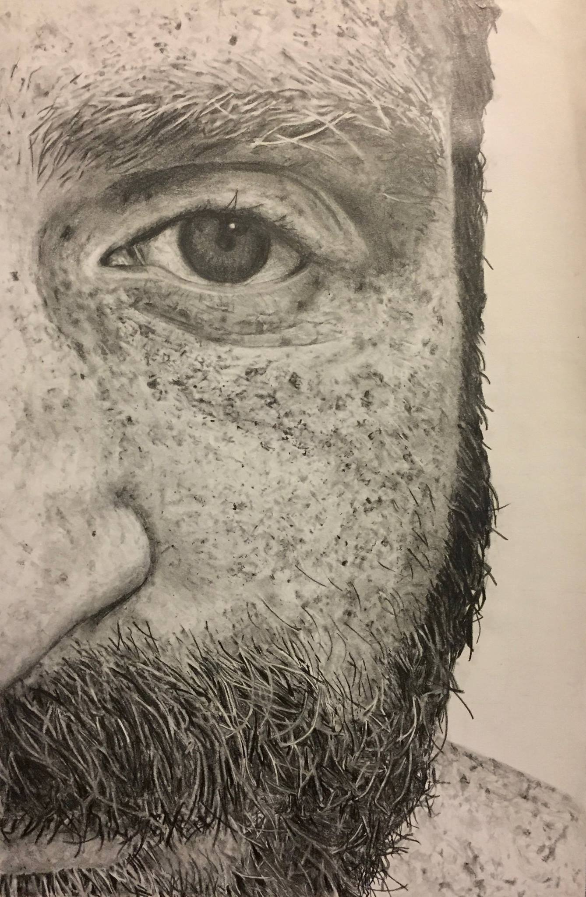
This drawing I made of my husband is the artwork I'm most proud of.
TODO measurement, graphite
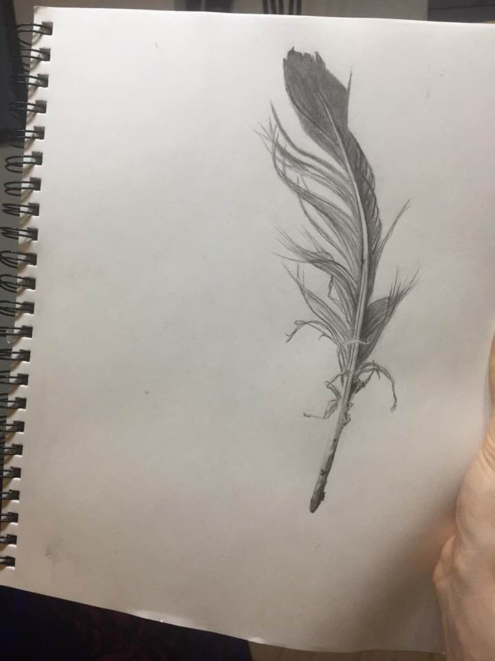I found a feather I liked in the park.
graphite
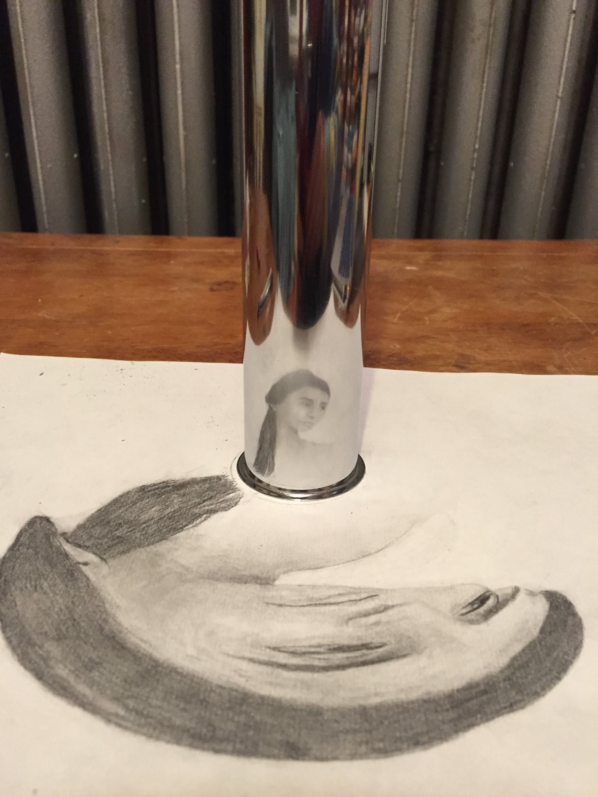I drew a smooshed lady that unsmooshes when viewed in the reflection of a cylinder.
~10"x12", graphite
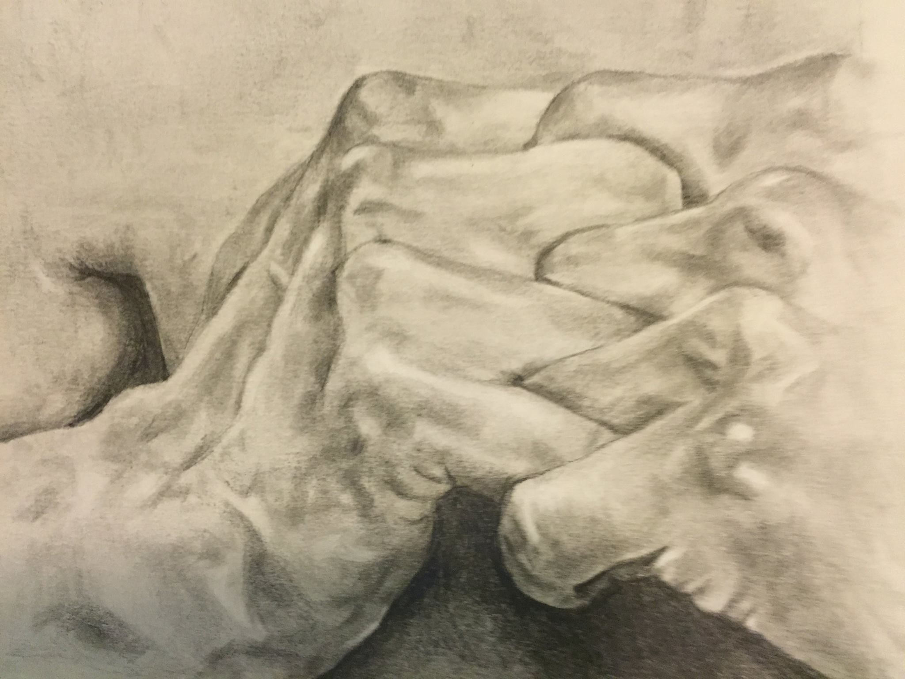This drawing is based on painting I love by Horacio Quiroz.
~8"x10", graphite
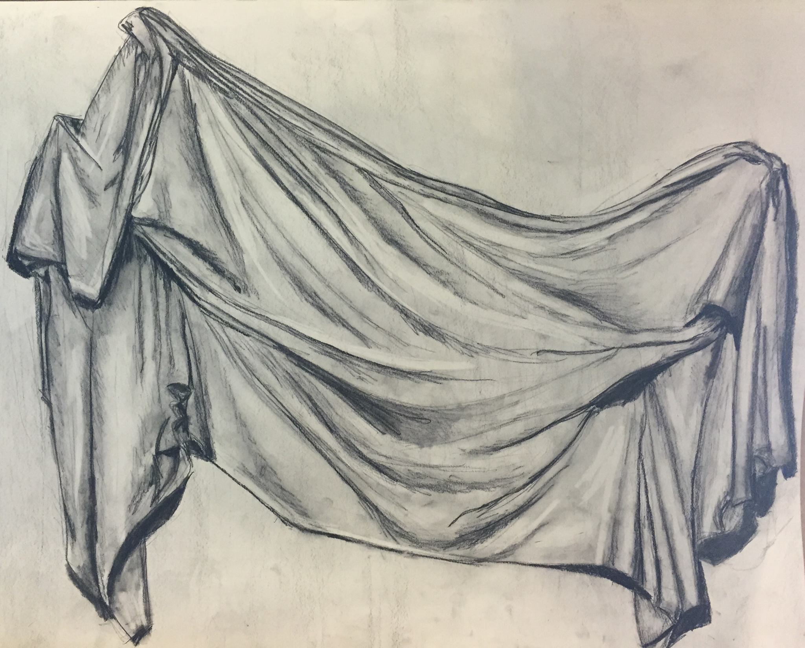Fabric
~20"x24", charcoal
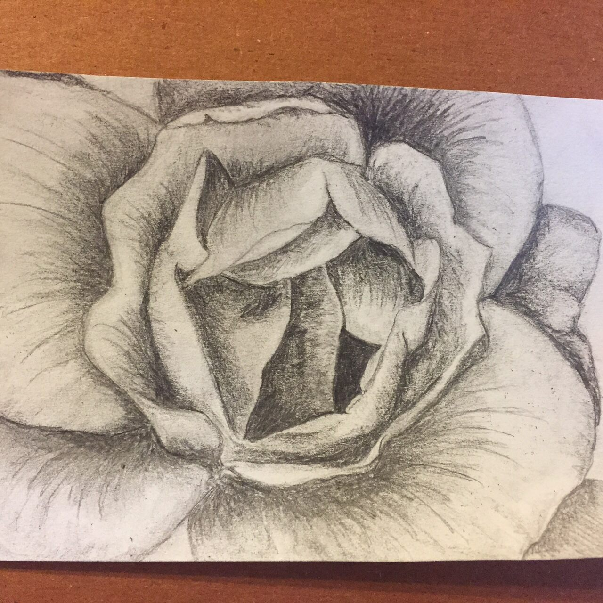Based on a friend's photograph of a flower.
~5"x7", graphite
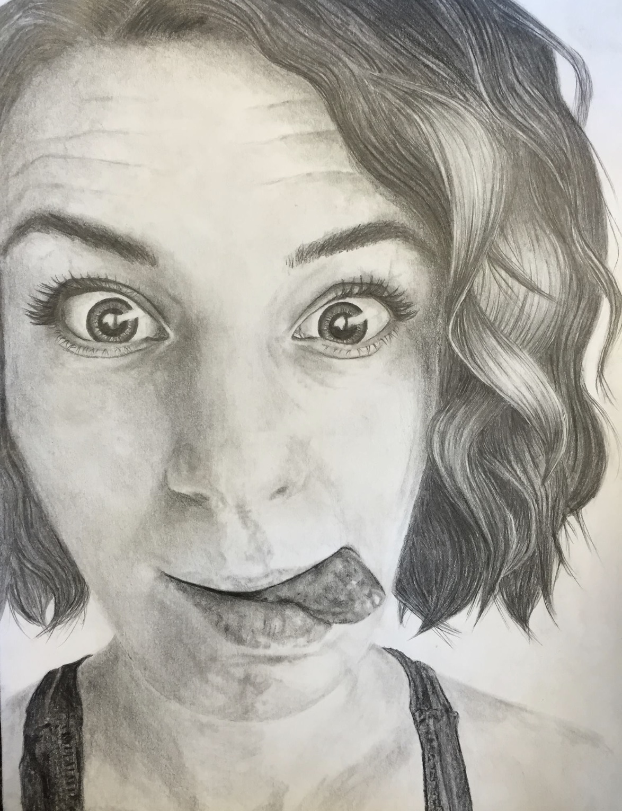Self-portrait
~16"x12", graphite
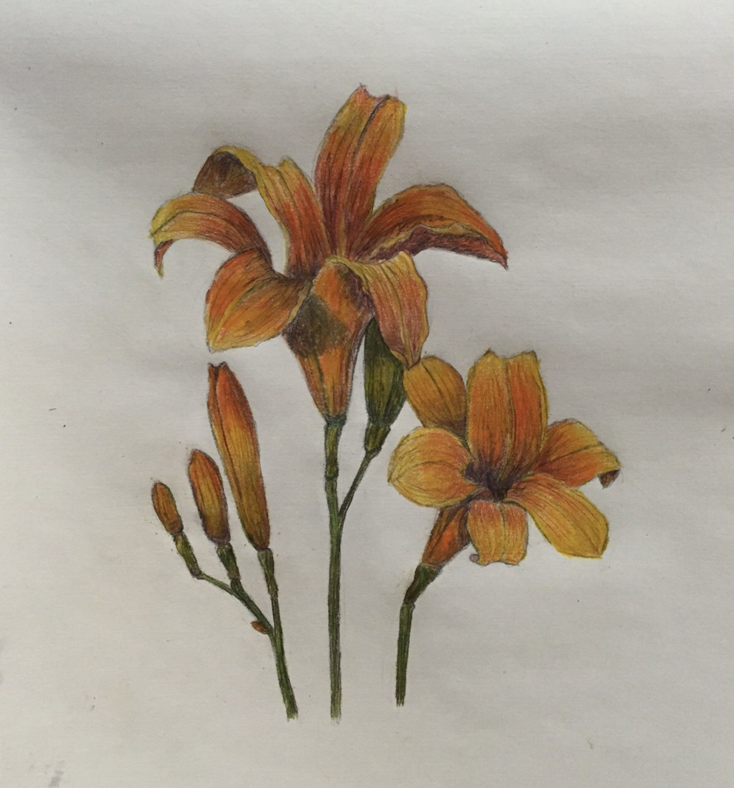Daylilies
~16"x12", graphite and colored pencil
ELOISE LIKES PIE
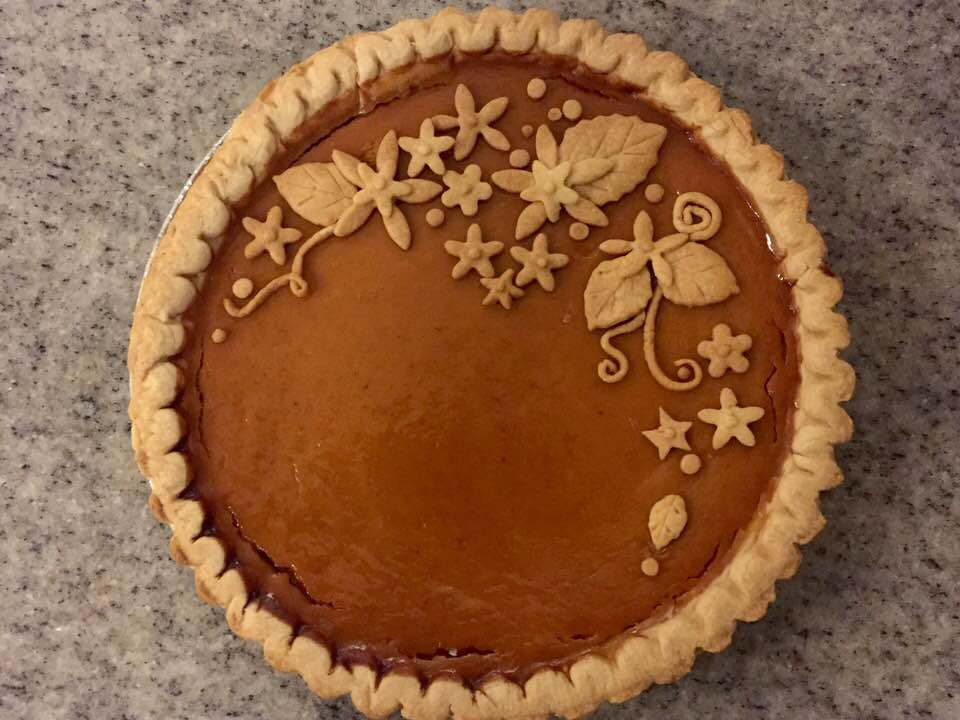
I made this pumpkin pie for Thanksgiving. I'd like to make additional interesting pies in future years.
ELOISE LIKES COSTUMES & SEWING
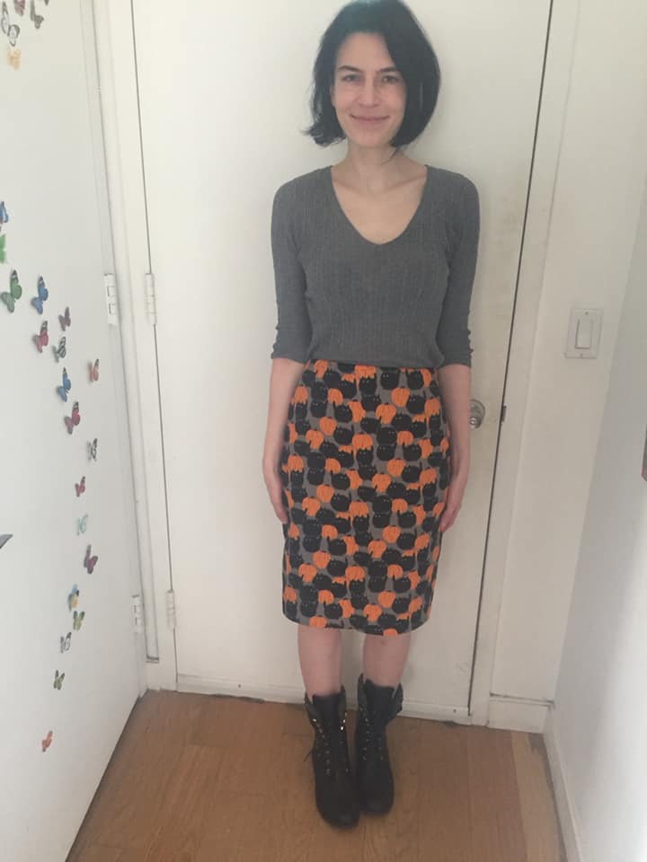

I sewed this skirt for October.
fabric from here
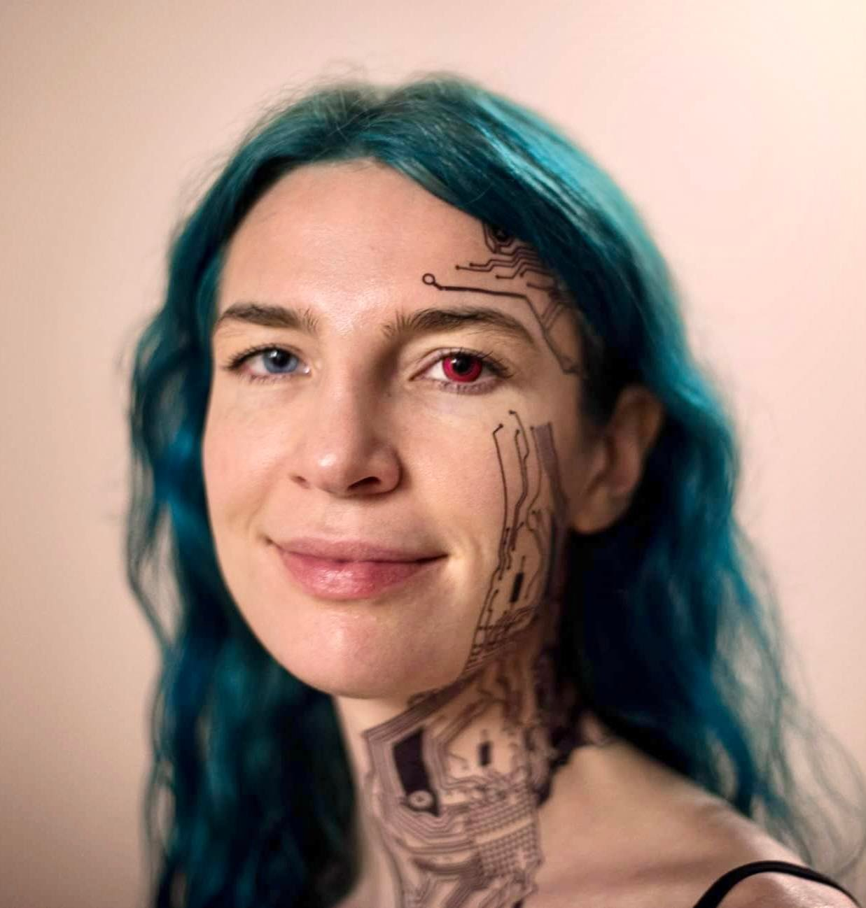I went to a time-traveller-themed party, where the dress code was "a costume from any era, past or future". I went as cyborg-Eloise. I'm wearing a red contact lens, and I layered temporary tattoos on my face and neck.
ELOISE LIKES SITTING
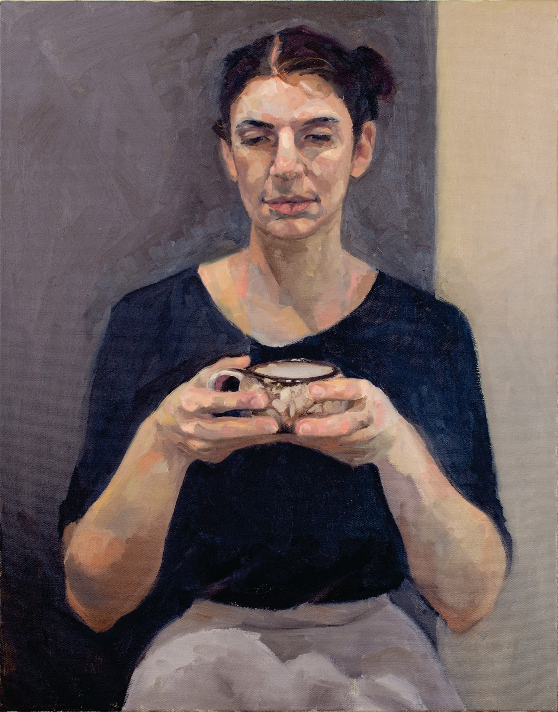
I sat for this painting "Eloise with Teacup" by my talented friend Angela Decarlis.
oil, 71cmx56cm